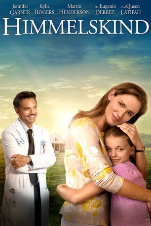

gesehen am 29.10.2016
gesehen am 29.10.2016Alternativ: Miracles from Heaven gesehen am 29.10.2016
 
 IMDB-Wertung: 6.9 / 10
IMDB-Wertung: 6.9 / 10  Metascore:
Metascore: 
Christy und Kevin Beam sind die stolzen Eltern von drei kleinen Mädchen und führen ein Familienleben wie aus dem Bilderbuch. Doch dann entdeckt Christy, dass die kleine Anna an einer schweren, unheilbaren Krankheit leidet. Die besorgte Mutter setzt alles daran, ihrer erst 10-jährigen Tochter beizustehen und eine Möglichkeit zu finden, dem Mädchen Erleichterung zu verschaffen, doch Annas Lage scheint hoffnungslos zu sein. Als sie aber eines Tages aus großer Höhe von einem Baum fällt, passiert das Unglaubliche. Nachdem sie aus ihrer mehrere Stunden andauernden Bewusstlosigkeit erwacht, hat sie nicht nur kaum einen Kratzer, sie scheint auch noch auf wundersame Weise von ihrer Krankheit geheilt worden zu sein. Ihrer Mutter erzählt Anna, dass ihr im Traum eine wunderbare Erscheinung gekommen sei...
Jahr: 2016
Dauer: 109 Minuten
FSK:
Land: USA Studio: Columbia PicturesTonspuren: DTS - ,
Untertitel: Deutsch,
Auflösung: 1080p (1920x1040) Größe: 6318 MB
Genre: Biographie, Drama, Familie, Fantasy
Regisseur: Patricia Riggen
Drehbuch: Paul Jan Nelissen
Soundtrack:
Darsteller:
 Jennifer Garner als Christy Beam
Jennifer Garner als Christy Beam Kylie Rogers als Anna Beam
Kylie Rogers als Anna Beam Martin Henderson als Kevin Beam
Martin Henderson als Kevin Beam Queen Latifah als Angela
Queen Latifah als Angela Eugenio Derbez als Dr. Nurko
Eugenio Derbez als Dr. Nurko Kelly Collins Lintz als Emmy
Kelly Collins Lintz als Emmy John Carroll Lynch als Pastor Scott
John Carroll Lynch als Pastor Scott Brandon Spink als Billy Snyder
Brandon Spink als Billy Snyder Rhoda Griffis als Church Lady
Rhoda Griffis als Church Lady Wayne Pére als Ben
Wayne Pére als Ben Bruce Altman als Dr. Burgi
Bruce Altman als Dr. Burgi Kenny Alfonso als Dr. Dorsi
Kenny Alfonso als Dr. Dorsi John Crow als News Reporter
John Crow als News Reporter Kevin Sizemore als Fireman
Kevin Sizemore als Fireman Gregory Alan Williams als Doctor
Gregory Alan Williams als Doctor Maia Moss-Fife als Pre-Op Nurse
Maia Moss-Fife als Pre-Op Nurse Matt Mercurio als Paramedic
Matt Mercurio als Paramedic Suehyla El-Attar als Receptionist
Suehyla El-Attar als Receptionist Adam Drescher als Manager
Adam Drescher als Manager Judd Lormand als Church Man
Judd Lormand als Church Man Barbara Vincent als Ticket Line Woman
Barbara Vincent als Ticket Line Woman Bradley Bowen als Dr. White , uncredited
Bradley Bowen als Dr. White , uncredited Geoffrey Howard als Airline Passenger , uncredited
Geoffrey Howard als Airline Passenger , uncreditedDatei: X:\2016(G-M)\Himmelskind (2016, FSK, 1920x1040).mkv seit 20.10.2016
Festplatte: HD 2016(A-Z)
 Es gibt insgesamt 164 Filme in der Gruppe '2016(G-M)'
Es gibt insgesamt 164 Filme in der Gruppe '2016(G-M)'